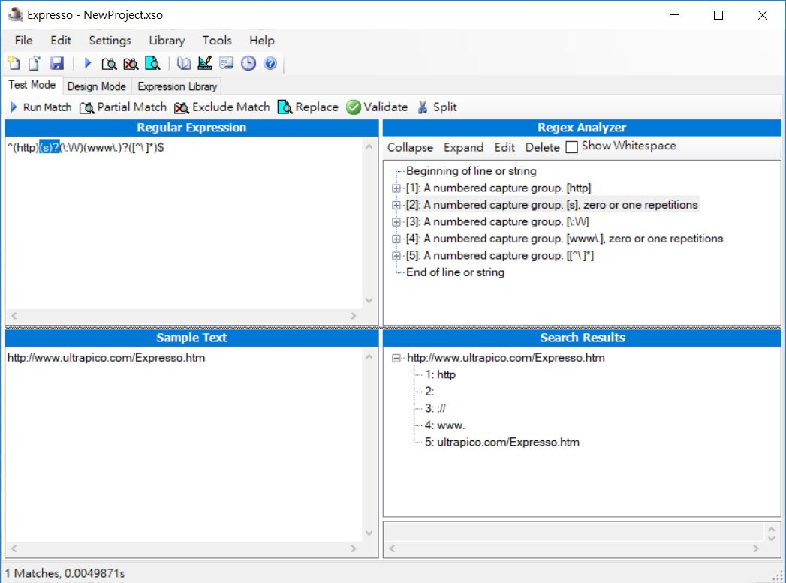

簡介規則表示式
June 29, 2022規則表示式（Regular expression）最早是由數學家 Stephen Kleene 於 1956 年提出，主要用於字元字串格式比對，後來在資訊領域廣為應用。
Why regular expression？
我會想要在這邊記錄規則表示式的原因在於，之前因為土炮 Toy 語言，在規則表示式的運用上更為熟悉了一些，為了日後查詢方便，在此做些記錄，這也是為什麼，我會將文件規則在「語言實作」上，當然，它也不只應用在語言實作上，純綷就只是個分類罷了。
各主流語言基本上都內建了規則表示式支援，雖然規則表示式的基礎大同小異，然而在規則表示式的書寫表示以及 API 的使用風格上各不相同，支援程度也具有差異性。
想要更全面認識規則表示式的話，可以參考《精通正規表達式》，這邊的文件，則是著重在各語言中規則表示式的書寫、API、支援等方面的記錄。
Regular expression 的譯名並沒有統一的標準，我喜歡使用「規則表示式」一詞，因為就功能上，當文字的出現順序，有著一些重複性的規則時，Regular expression 中有各種符號元素可用來表示這些規則。
Regular expression 不是唯一可用來表示文字模式規則的方式，在一些簡單的場合，不需要 Regular expression 的強大功能時，也有有一些簡單的表示式；然而由於 Regular expression 功能強大，語言或程式庫等的支援度廣泛，開發者之間溝通文字模式規則時，多半也都使用 Regular expression，為了強調其溝通性、正統性、一定程度的標準化，也常見以「正規」來作為 Regular 的譯名。
Expression 可譯為「表示」、「表達」或「（數學）運算式」，Regular expression 的 expression 即表示、表達規則，要當其是個數學符號標示方式也可以，其背後也隱含著有限狀態機（Finite-state Automaton）的運算，想採用「表示」、「表達」或「運算式」哪一個來當作 expression 的譯名，端看你從哪個角度來看。
因此，規則表示式、規則表達式、正規表達式、正規運算式…想使用哪個譯名，幾乎就成了各自的偏好了，這系列文件（以及我的書），則一直都是使用「規則表示式」一詞，如此而已（沒什麼好爭吵的）。
它是一門語言
規則表示式嚴格來說是門語言，這門語言中基本上包括兩種字元符號，這些字元符號具有特定之意義，就如主流程式語言中，+、-、= 等字元符號具有各自之意義。
規則表示式中的兩類基本字元符號為字面字元（Literals）與詮譯字元（Metacharacters）。
字面字元是指按照字面意義比對的字元，例如指定 Orz 時，指的是三個字元 O、r、z 連續出現的規則；詮譯字元是不按照字面比對，在不同情境有不同意義的字元。
例如 ^ 是詮譯字元，規則表示式 ^Orz 是指行首後接續出現 Orz 的規則，也就是此時 ^ 表示一行的開頭，而不是比對 ^ 這個字元；但是規則表示式 [^Orz] 用來表示指不包括 O 或 r 或 z，也就是在 [] 中時，^ 表示非之後幾個字元之一的情況。
詮譯字元就像是程式語言中的控制結構之類的語法，找出並理解詮譯字元想要詮譯的概念，對於規則表示式的閱讀非常重要。
雖然說規則表示式是門語言，然而撰寫與閱讀上並不容易，因為不像主流程式語言，會使用人類易讀的 if、else 等單字來作為符號表示，為此，有些程式庫會封裝規則表示式，透過函式、方法等名稱，以及 Builder 之類的模式、流暢 API 等，協助開發者以易懂、易讀的方式來建構規則表示式。
例如 VerbalExpressions 中，就有一些主流語言的程式庫，可協助建構規則表示式，以 PythonVerbalExpressions 為例，相對於 ^(http)(s)?(\:\/\/)(www\.)?([^\ ]*)$，底下顯然比較好懂：
from verbalexpressions import VerEx
verbal_expression = VerEx()
tester = (verbal_expression.
start_of_line().
find('http').
maybe('s').
find('://').
maybe('www.').
anything_but(' ').
end_of_line()
)
與其說這樣的風格比較好懂，不如說，這樣的風格突顯了建構規則表示式的正確流程，複雜的規則表示式，不是一開始就這麼複雜的，你應該從一個簡單的規則開始，在正確地表示出文字的模式之後，再加入下一個規則，在加入規則時，可以適當地為規則表示式加入註解：
^ # 行開頭
(http) # 要有 http
(s)? # 可能有一個 s 或沒有 s
(\:\/\/) # 要有 ://
(www\.)? # 可能有 www\,
([^\ ]*) # 可以是空白以外的零或多個任意字元
$ # 行尾
分析工具
問題來了，如果手邊拿到了一個複雜的規則表示式，該怎麼閱讀呢？就算是熟悉規則表示式，想要在一堆符號中逐一拆解，也是件麻煩事，這時 Expression 是個不錯的工具，它會幫你分析、拆解規則表示式：

只要在圖左上窗格貼入規則表示式，就會自動產生圖右上窗格的分析文字，左下窗格可貼入測試文字，右下窗格可以顯示分析後，哪個文字是由哪個規則比對而來。